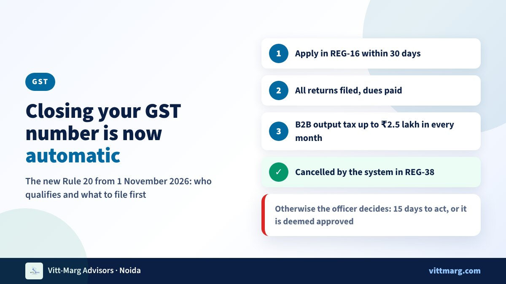

Shutting a business, converting a proprietorship into a company or simply falling below the threshold used to mean a long wait for an officer to approve the cancellation of GST registration, and sometimes a notice in between. From 1 November 2026, the CBIC has replaced Rule 20 of the CGST Rules so that many small and simple cases are cancelled automatically by the system.

The notification
The change is made by Notification No. 05/2026-Central Tax dated 26 October 2026, the first phase of the 57th GST Council's recommendations. A corrigendum was issued on 18 November 2026 to fix drafting errors in the same rules.
Before you apply
- Apply in FORM GST REG-16 within 30 days of the event, such as closing the business or a transfer. The 30-day limit does not apply on the death of a sole proprietor; the legal heir can apply.
- File every return up to the date of cancellation, including CMP-08 for composition dealers. If you filed GSTR-1 for a month, the GSTR-3B for that month must be filed too.
- List the stock in hand and capital goods, and the tax payable on them.
- Path on the portal: Services > Registration > Application for Cancellation of Registration.
When the cancellation is automatic
The system approves the application without an officer if two things hold:
- All returns are filed and dues are paid.
- The output tax declared in GSTR-1 or IFF on supplies to registered persons did not exceed ₹2.5 lakh in any single month since registration. This is a monthly test on B2B tax, not a turnover limit.
Even if one month crossed ₹2.5 lakh, the application can still go through automatically if you file the final return, GSTR-10, within three days of its due date, and the other conditions are met. Approval is issued in the new form REG-38.
When an officer decides
| Step | Form | Time limit |
|---|---|---|
| Officer cancels the registration | REG-19 | Within 15 days |
| Or officer points out a deficiency | REG-03 | Within 15 days |
| You reply | REG-04 | Within 15 days |
| Officer approves or rejects | REG-19 or REG-05 | Within 15 days of the reply |
If the officer does nothing within 15 days, the application is deemed approved. If you do not reply to a deficiency notice, it is deemed rejected. While the application is pending, the registration stays suspended.
Other dates to note
- 1 December 2026: a revised REG-16, with simpler reasons, an option to file a nil return for the period after the last return, and new tables for stock and credit reversal. The credit reversal on closing stock is also reported in REG-16.
- 1 April 2027: forms for changing the effective date of a cancellation, and a separate system-based cancellation and revocation process for certain non-compliances.
What does not change
Cancellation does not wipe out tax, interest or penalty for the period before it. The final return in GSTR-10 is still due within three months of the date of cancellation or the order, whichever is later, and input tax credit on closing stock must be reversed.
Free tools: check your tax with our income tax calculator (old vs new regime, FY 2026-27), and see every due date in the monthly compliance calendar.
Frequently asked questions
Can GST registration be cancelled automatically from November 2026?
Yes. Under the new Rule 20 from 1 November 2026, an application in REG-16 is approved by the system in REG-38 if returns are filed, dues are paid and B2B output tax never exceeded ₹2.5 lakh in any month.
What is the ₹2.5 lakh limit for GST cancellation?
It is the output tax declared in GSTR-1 or IFF on supplies to registered persons in a single month. It is tested month by month and is not a turnover limit.
How long does an officer have to decide a GST cancellation application?
Fifteen days to cancel or raise a deficiency. If the officer does not act within 15 days of the application or of your reply, it is deemed approved.
Do I still need to file GSTR-10 after cancellation?
Yes. The final return GSTR-10 is still required. Filing it within three days of its due date can also allow automatic cancellation where one month crossed the ₹2.5 lakh limit.
Within how many days must I apply for GST cancellation?
Within 30 days of the event, such as closing or transferring the business. The limit does not apply on the death of a sole proprietor.
How Vitt-Marg helps
We handle monthly GST returns, reverse charge and TDS compliance, GSTR-2B reconciliation and replies to notices for businesses across Delhi NCR. If these changes affect your purchases or sales, send us a list of your scrap and reverse charge vendors and we will tell you exactly what to change.
General information, current as of 22 November 2026, not advice for a specific case. Notifications and rules change often, so check with us before acting on it.